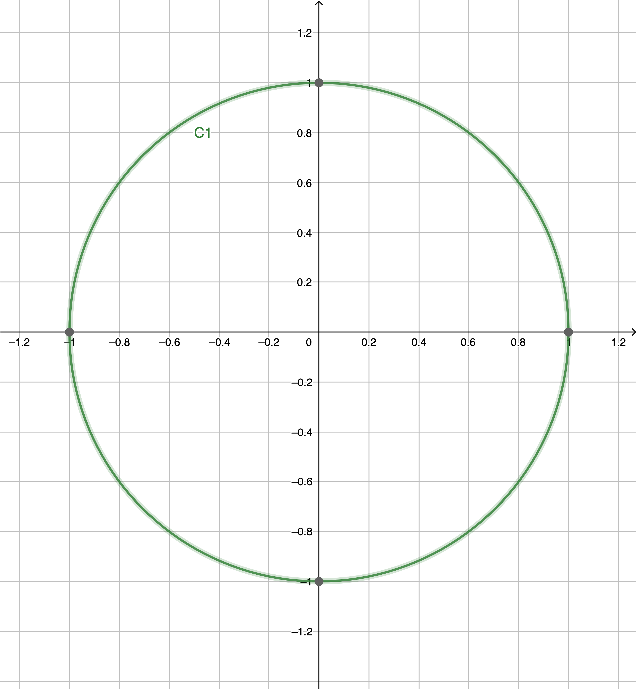

Trigonomètrie dans un cercle
Cercle trigonometrique
Deftinition
Sur un cercle, on appelle sens direct, sens positif ou sens trigonométrique le sens contraire des aiguilles d'une montre.
Definition
Dans le plan muni d'un repère orthonormé \( \left( O,\overrightarrow{OI} ,\overrightarrow{OJ} \right) \)et orienté dans le sens direct, le cercle trigonométrique est le cercle de centre O et de rayon 1.
Les axes \( OI \) et \( OJ \) subdivisent le cercle en en quatre quadrants notés: \( (I) \), \( (II) \), \( (III) \), \( (IV) \)
Radian
Definition
On appelle radian, noté \( rad \), la mesure de l'angle au centre qui intercepte un arc de longueur 1 du cercle.
Formules trigonomètriques
Voici les formules trigonomètriques.